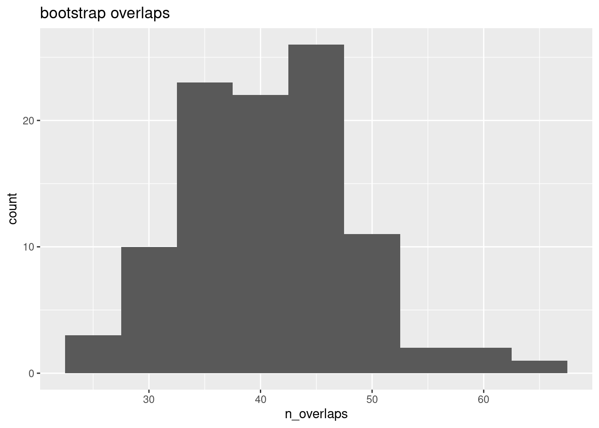

Chapter 4 Bootstrap overlap
Objective:
library(AnnotationHub)
ah <- AnnotationHub()
kidney_pks <- ah[["AH43443"]]
bladder_pks <- ah[["AH44180"]]## AnnotationHub with 12 records
## # snapshotDate(): 2021-10-20
## # $dataprovider: UCSC, ENCODE
## # $species: Homo sapiens
## # $rdataclass: GRanges
## # additional mcols(): taxonomyid, genome, description,
## # coordinate_1_based, maintainer, rdatadateadded, preparerclass, tags,
## # rdatapath, sourceurl, sourcetype
## # retrieve records with, e.g., 'object[["AH95910"]]'
##
## title
## AH95910 | hg19.Bernstein.Mint_Excludable_hg19.rds
## AH95911 | hg19.Birney.wgEncodeDacMapabilityConsensusExcludable.rds
## AH95912 | hg19.Crawford.wgEncodeDukeMapabilityRegionsExcludable.rds
## AH95913 | hg19.Wold.hg19mitoExcludable.rds
## AH95914 | hg19.Yeo.eCLIP_Excludableregions.hg19.rds
## ... ...
## AH95929 | hg19.UCSC.contig.rds
## AH95930 | hg19.UCSC.heterochromatin.rds
## AH95931 | hg19.UCSC.scaffold.rds
## AH95932 | hg19.UCSC.short_arm.rds
## AH95933 | hg19.UCSC.telomere.rds## loading from cachex <- kidney_pks
y <- bladder_pks
x <- keepStandardChromosomes(x)
seqlevels(x, pruning.mode="coarse") <- setdiff(seqlevels(x), "chrM")
seqlevels(y, pruning.mode="coarse") <- seqlevels(x)
seqlevels(exclude, pruning.mode="coarse") <- seqlevels(x)q_thr <- 4
s_thr <- 10
x <- x %>% filter(qValue > q_thr & signalValue > s_thr) %>%
sort()
y <- y %>% filter(qValue > q_thr & signalValue > s_thr) %>%
sort()## DataFrame with 1 row and 1 column
## sum
## <integer>
## 1 3776##
## 0 1 2 3 4
## 7863 3075 315 21 2## DataFrame with 1 row and 1 column
## sum
## <integer>
## 1 0library(nullranges)
R <- 100 # number of iterations
pks_to_boot <- y %>%
mutate(id=seq_len(length(peak))) %>%
select(id)
set.seed(5)
boots <- bootRanges(pks_to_boot, blockLength=5e5, R=R, exclude=exclude)examine properties of permuted ‘y’ over iterations
stats <- boots %>% group_by(iter) %>%
summarize(n = n(), sum_width=sum(width)/1e6) %>%
as.data.frame()
summary(stats)## iter n sum_width
## 1 : 1 Min. :4110 Min. :3.741
## 2 : 1 1st Qu.:4252 1st Qu.:3.910
## 3 : 1 Median :4318 Median :3.996
## 4 : 1 Mean :4328 Mean :3.987
## 5 : 1 3rd Qu.:4399 3rd Qu.:4.066
## 6 : 1 Max. :4608 Max. :4.241
## (Other):94detail of how we count hits, an ID of NA = no hit
null <- x %>% join_overlap_left(boots) %>%
group_by(iter) %>%
summarize(n_overlaps=counter(id)) %>%
as.data.frame() %>%
complete(iter, fill=list(rate=0)) %>%
drop_na()
head(null)## # A tibble: 6 × 2
## iter n_overlaps
## <fct> <int>
## 1 1 37
## 2 2 36
## 3 3 46
## 4 4 27
## 5 5 29
## 6 6 41## [1] 3776library(ggplot2)
ggplot(null, aes(n_overlaps)) +
geom_histogram(binwidth=5) +
ggtitle("bootstrap overlaps")